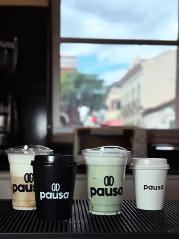
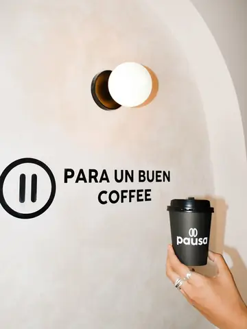

pausa.coffeetja
101publicaciones
1.650seguidores
Pausa Coffee Express · Café para llevar
Cafetería
Pide por WhatsApp y retira en ventanilla sin fila ☕
Lun–Sáb · 8–12 y 15–20
Menú, cómo pedir y puntos 👇
web de la propuesta
C. Sucre entre Virginio Lema y 15 de Abril



Maqueta de propuesta (EC2, Marketing Móvil MKD-314, UCB Tarija). Los enlaces funcionan: el WhatsApp abre un número de demostración del equipo, no el de Pausa. Cifras del perfil tomadas de C30 (09/09/2026).
Aplicar estos cambios en la cuenta real depende del dueño: PROPUESTO.